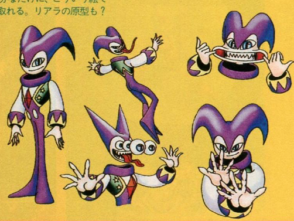
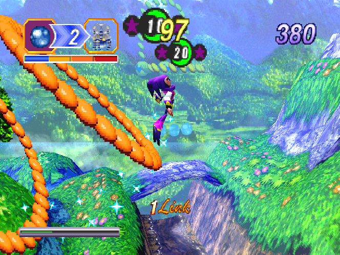

NiGHTS: Into Dreams Review
How it came to be...
During the development of Sonic 2, lead designer on both it and NiGHTS, Yuji Naka, had to fly from Japan to America a lot to work with STI. During these flights, he thought a lot about making a game about flight and how one would do such a thing. How do you design a platformer game where the protagonist can simply fly over the platforms? When presenting some of his ideas to Naoto Ohshima, lead art director and character designer on Sonic 1 and NiGHTS, some concepts emerged. One idea was that you played as a baby bird who lost their mother. At some point, their wing was broken and over the course of the game, it would heal and eventually grant you flight. This was canned due to the animal character idea being seen as too similar to Sonic.
Eventually though, Ohshima and Naka both agreed upon dreams as an inspiration, and the first handful of concepts to resemble NiGHTS were born. A lot of inspiration was pulled from intense study of REM sleep, as well as the theories of early Swiss psychologist, Carl Jung. A subconcious influence that helped shape the project early on was Cirque De Soleil, which both shaped the Jester-like apperance of NiGHTS and the idea of giving NiGHTS a notable European influence.

The Story
The game follows two young children, Claris Sinclair and Elliot Edwards. Prior to the events of the game, it's shown they've got a passion for something but are afraid of failure and embaressment. This is shown as the world around them morphing into amorphous darkness as their anxieties overtake them breifly. While you play as and follow these two children, their story is a half of it. Over the events of the gameplay, they undergo the individuation process and how to fly without wings.
The other half of the story focuses on Nightopea, the land of dreams. This is a world that, since the dawn of time, Wizeman the Wicked has wanted for himself. In the hopes of conquest. He created a legion of Nightmarens, creatures that obey his will. Their hierarchy ending with two particular creations, NiGHTS and Reala. While both were made with the blessing of free-will, NiGHTS was the only one to use it, deciding to rebel against Wizeman and go on their own (often hedonistic and mischevious) path. However, they were emprisoned by Reala and are trapped on their own.
When Claris and Elliot end up in Nightopea through dreaming, they're caught in the crossfire of this battle, and are robbed of their essence by Wizeman's minions first thing. Due to this, they're tricked by NiGHTS into dualizing, becoming one gestalt being of both themselves and NiGHTS. Using their newfound abilities and freedom respectively, they retrieve their Ideya and get a chance at taking down high-ranking Nightmarens. The experience helping Claris and Elliot find power in themselves.

The Music
The music in this game is phenomenal, done by famous composers Masafumi Ogata and Naofumi Hataya. They've worked together before on other respected SEGA titles, such as Ristar or Sonic CD. However, I believe this is some of their best work. The soundtrack's genres and scope is extremely wide, not sticking to one consistent or repetitive sound. The melodies are strong and memorable, most tracks having a wistful, emotionally moving sound, and an ambience that helps you feel like you're in a strange dream world. The boss themes are all unique, varying from the suspensful, sophisticated chords with opera singing of 'She had Long Ears' to the almost beachhouse sounding 'E-LE-KI Sparkle'. On top of that, the level themes have several versions, based on the mood of the creatures living in them, so there's several mixes of these already great songs that sound better.
The music helps sell the world and the idea that flying through Nightopea is an experience that would help to guide you forward. I cannot name a single track in the game that isn't phenomenal. I can't just link the entire game's soundtrack here unfortunately, nor would it be best to spoil a lot of the music for those who want to try NiGHTS: Into Dreams. It's hard to pick a song to show off in this review, but the best one would likely be Gate of your Dream. This track plays before you enter any of the levels and perfectly captures the warmth of drifting off to sleep.